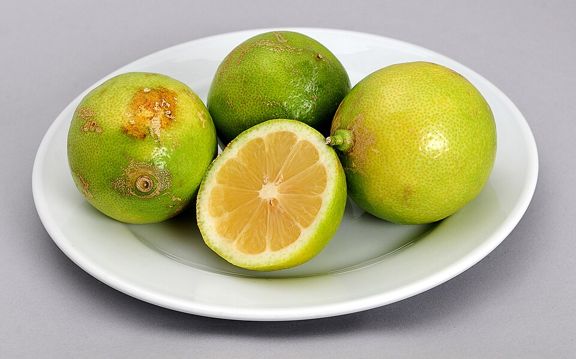

Massas
Macarrão ao creme

Ingredientes
- 1 pacote de macarrão (500 g) de sua preferência
- 1 lata de creme de leite
- 4 colheres (sopa) de leite
- 1 xícara (chá) de ervilha
- 1 xícara (chá) de presunto em cubinhos
- 1 colher (sopa) de manteiga
- Sal e pimenta a gosto
Modo de preparo
- Cozinhe o macarrão em água salgada; escorra.
- Aqueça a manteiga, junte leite e creme de leite; tempere. Acrescente ervilha e presunto. Quando começar a ferver, retire do fogo e sirva com o macarrão.
Observação
Receita do leitor (Eliana Cabral, Nova Iguaçu/RJ).